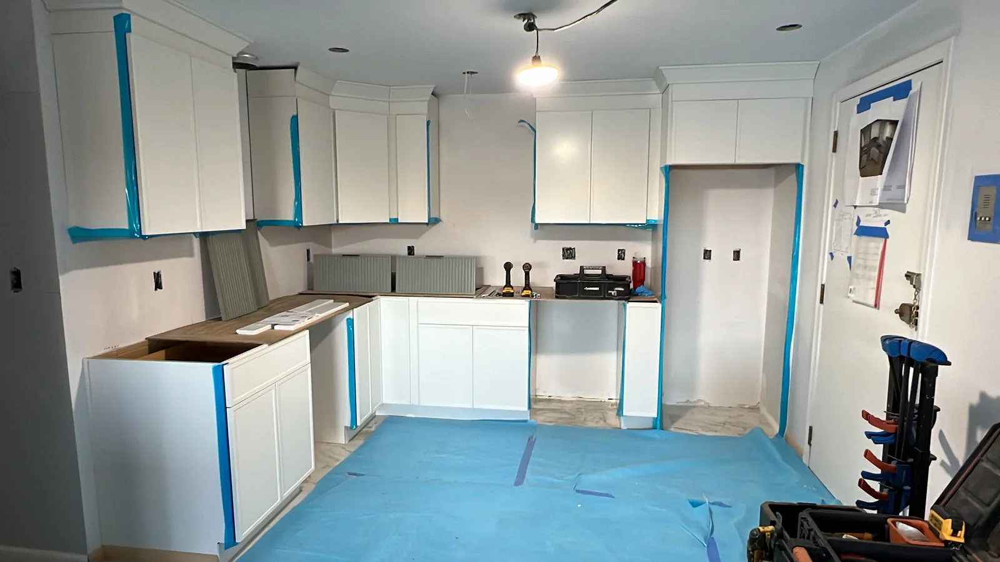
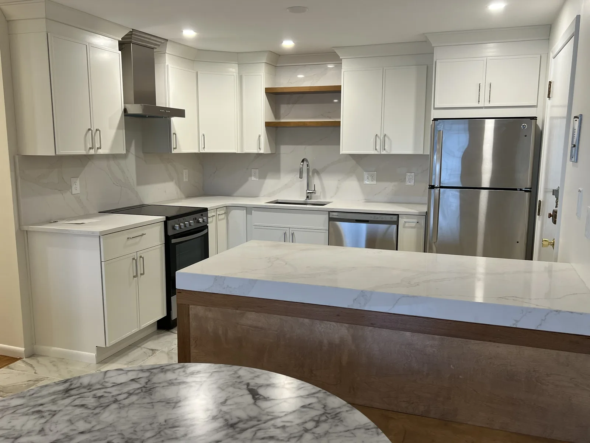
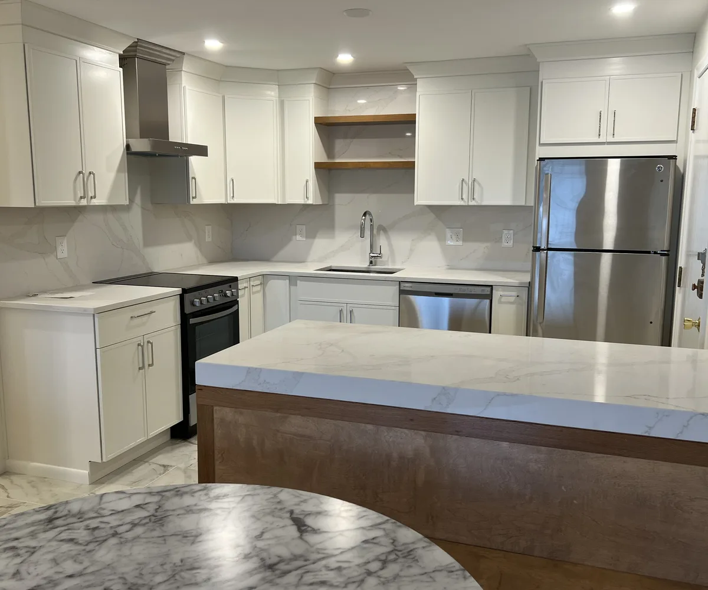

kitchen remodel contractor in Acton MA
Kitchen Renovation Acton MA: cabinets, layout and finish details planned together
Kitchen renovation Acton projects with DeFaria start with an owner-led walkthrough and a written, itemized scope. DeFaria Construction helps Acton homeowners plan a Kitchen Remodel around the way the room is used every day: Kitchen Cabinets, counters, lighting, flooring, Kitchen Island options and a clear construction scope before work begins.
Our work
A real DeFaria kitchen remodel
Watch a kitchen we finished, built for everyday function and to last.
Get a Free Estimate
Local search focus
Acton homeowners need a kitchen page that answers the real hiring question.
In Acton, kitchen remodeling often happens in colonials, capes and newer family homes. Many homeowners want a Kitchen Remodel that opens the room up without losing storage or making the main floor feel patched together.
This page is built for homeowners with hiring intent, not for people casually browsing photos. It connects the city, ZIP code area and kitchen scope to a direct estimate path. Someone searching for kitchen remodel contractor in Acton MA should see more than one generic paragraph about remodeling.
- Acton Kitchen Remodel planning for the 01718, 01720 ZIP code areas.
- Acton Kitchen Cabinets, Cabinets, counters and backsplash decisions tied to the same scope.
- Owner-led communication for Acton homeowners from walkthrough to final walkthrough.
The scope
What a full Acton Kitchen Remodel can include
A full Kitchen Remodel is more than a new finish package. In Acton, DeFaria looks at the existing footprint, the daily traffic path, appliance locations and the finish level before separating the project into disconnected purchases.
- Cabinet layout, pantry space and appliance placement usually have to be solved before finishes are selected.
- A Kitchen Island often needs to work as prep space, homework space and casual seating instead of just a visual centerpiece.
- Lighting, flooring, backsplash, plumbing and electrical work are sequenced so the Acton-area style of project does not get reduced to disconnected finish choices.
Scope, sequencing and inspections should be discussed early when walls, plumbing or electrical work may change. That is why the first conversation is about scope, not only colors and materials.
Local planning notes
How kitchen remodeling decisions change across Acton
Homes around West Acton, South Acton, Acton Center do not all need the same kitchen plan. Some need better Cabinets and counter space. Some need lighting, flooring and backsplash work. Others need a Kitchen Island, wall opening or a more complete remodel.
For Acton, DeFaria treats Kitchen Remodeling as a construction conversation first. The estimate should explain what will be opened, what will be replaced, how the room will be protected and how the finished kitchen will support everyday use.
For homeowners comparing a Kitchen Remodel Contractor, the deciding factor is often whether the contractor can connect design choices to construction reality. The page is written around searches in 01718 and 01720, but the content stays specific to how people actually choose a remodeler.
Project photos
Kitchen Remodeling photos for Acton homeowners
Real kitchen project photography helps Acton homeowners judge Cabinets, layout, finish level and construction cleanliness before requesting an estimate.



Areas covered
Kitchen Remodel service across Acton neighborhoods and ZIP codes
DeFaria Construction supports kitchen remodeling searches across Acton and nearby Middlesex County towns, giving Acton visitors enough local context to decide whether DeFaria is the right contractor to call.
- West Acton
- South Acton
- Acton Center
- North Acton
- East Acton
- 01718
- 01720
Cost
What a kitchen renovation in Acton usually costs
Across Essex and Middlesex County, a cosmetic kitchen refresh usually runs about $18,000 to $30,000, a mid-range full remodel about $35,000 to $65,000, and a high-end remodel or a full gut with a layout change about $70,000 to $120,000 and up. Acton kitchens land all over that range, because a 1960s cape with a closed galley and a 2000s colonial with an open family room are very different starting points.
Four things move the number most: the cabinet grade, the countertop, whether the sink, range or walls move, and what is found once the old kitchen comes out. DeFaria walks the Acton house first and then writes an itemized estimate, so you can see what each part of the job costs and decide where the money matters to you, instead of comparing one lump sum against another.
- Cosmetic refresh: new counters, backsplash, paint, lighting and hardware on the existing layout.
- Mid-range remodel: new cabinets and counters, flooring, lighting and updated plumbing and electrical in roughly the same footprint.
- High-end or full gut: layout change, wall removal, custom cabinetry and premium surfaces.
Timeline
How long a kitchen renovation in Acton takes
Most full kitchen remodels take about six to twelve weeks of work once cabinets and materials are ready. The calendar before demolition matters just as much: design decisions, the estimate, permits and the cabinet order. Cabinet lead times often run several weeks, so DeFaria orders them before demolition instead of tearing the kitchen out and then waiting.
A good Acton schedule is written down in order: protection and demolition, rough framing, rough plumbing and electrical, inspections, insulation and drywall, flooring, cabinets, counter template, counters, backsplash, trim, paint and the final punch list. When the homeowner can see that sequence on paper, it is easy to tell whether the job is on track, and it is much harder for a contractor to leave the kitchen half finished while crews disappear to another project.
House types
Acton kitchen layouts for colonials, capes and newer homes
Acton is mostly single-family neighborhoods built over several decades, and the house type usually decides the layout options. Many capes and ranches from the 1950s through the 1970s have a small kitchen closed off from the dining room. The common move there is to take down one wall, which almost always means checking whether that wall carries load from the second floor or the roof before anyone promises an open plan.
Center-entrance and garrison colonials often have a kitchen at the back of the house next to a family room. Those projects tend to be about a working island, a pantry wall, better light and a cleaner path to the deck or yard. Newer colonials in North Acton and East Acton subdivisions usually have the space already; the work there is cabinetry, surfaces, lighting and appliances that finally fit the family. DeFaria sketches the traffic path and the work zones first, then picks finishes.
Cabinets
Choosing cabinets for an Acton kitchen renovation
Cabinets are usually the biggest single line in a kitchen renovation, so the grade you choose sets the budget. Stock cabinets come in fixed sizes and ship fastest. Semi-custom lines offer more sizes, finishes and interior options like drawer organizers and pull-out pantries. Custom or built-to-measure cabinetry fits odd walls, sloped ceilings and the out-of-square rooms that older Acton capes are known for.
For most families the right answer is a mix: drawers instead of base doors wherever possible, a tall pantry or pantry wall near the refrigerator, and an island sized for the aisle around it, not for the photo. DeFaria checks the final cabinet layout against the real room, including window trim, heating registers and outlets, before the order is placed. That one step prevents the most common delay we see, a cabinet that arrives and does not fit.
Surfaces
Countertops, backsplash and flooring that hold up in Acton homes
Quartz is the most requested countertop because it does not need sealing and handles a busy family kitchen well. Granite and other natural stone still make sense for a homeowner who wants a one-of-a-kind slab and does not mind sealing it. Butcher block is a warm choice for an island top or a baking station. The counter fabricator templates after the cabinets are installed and level, so counters always come after cabinets on a real schedule.
Flooring has to survive wet boots and sand from a New England winter. Porcelain tile and engineered or site-finished hardwood are the usual picks, and if the kitchen flows into existing hardwood, matching or weaving the boards is planned before demolition. A full-height backsplash behind the range and a simple tile everywhere else is a good way to put money where it shows.
Permits
Permits, inspections and licensed trades behind an Acton kitchen
A kitchen renovation in Acton usually involves more than one permit. Removing or changing walls needs a building permit through the town. New circuits, lighting and outlets need an electrical permit pulled by a licensed electrician. Moving the sink or adding a dishwasher or pot filler needs a plumbing permit, and any gas line for a range or cooktop needs a licensed gas fitter. Each of those trades has its own rough and final inspection.
Massachusetts also requires a contractor doing residential remodeling on an owner-occupied home to be registered as a Home Improvement Contractor, and structural work calls for a Construction Supervisor License holder. Ask any contractor you interview for those numbers and for a certificate of insurance. DeFaria Construction is licensed and insured, and Luiz keeps the inspections in the schedule so drywall never goes up before the work behind it is signed off.
- Building permit for wall changes, structural work and larger remodels
- Electrical permit by a licensed electrician for circuits, lighting and appliance power
- Plumbing and gas permits by licensed trades for sink, dishwasher and range moves
Water and septic
Water, sewer and septic questions specific to Acton
Acton is a town where the utility setup changes from street to street. Much of the town gets its drinking water from the Acton Water District, and some areas are tied into a municipal sewer, but many Acton homes still rely on an on-site septic system regulated under the state Title 5 code and the local Board of Health. That matters more in a kitchen than people expect.
A garbage disposal adds load to a septic system, so on a septic property we talk through the disposal before it goes in the plan. If the house has water treatment or filtration equipment, the sink base or a nearby cabinet is planned around it from day one. And if the kitchen project is part of a larger addition that adds a bedroom, the septic design capacity can come into play, which is a conversation to have with the Board of Health before the design is final, not after.
Condos and townhomes
Kitchen renovation for Acton condos and townhomes in 01718 and 01720
Not every Acton kitchen is in a detached house. Condo and townhome communities, including the Nagog Woods area in the 01718 ZIP code, come with their own rules. Most associations want to approve the scope before work starts, limit work to certain hours, require proof of the contractor's insurance and restrict what can change in shared walls, plumbing stacks and exterior vents.
For a condo kitchen DeFaria starts by reading the association rules with you and building the schedule around them: parking and dumpster location, protection for shared hallways, and when water can be shut off. Layout changes in a condo are usually smaller because the stacks stay put, so the budget tends to go into cabinets, counters, lighting and flooring. Planned properly, a condo kitchen can be one of the fastest and cleanest remodels we do.
Older homes
Older homes near Acton Centre, South Acton and West Acton
Acton's village centers, Acton Centre, South Acton and West Acton, hold some of the town's oldest houses, and a kitchen renovation there needs a little more planning. Plaster walls, older wiring, framing that is not square and floors that have settled over a century are all normal. None of that is a reason not to remodel; it is a reason to uncover the work honestly and price allowances for what is likely behind the walls.
Parts of those village areas are also local historic districts. Interior kitchen work is usually not what a historic commission looks at, but exterior changes, like a new window, a door to the yard or a range hood vent through a street-facing wall, can be. On an older Acton home DeFaria checks with the town before touching the exterior, so the kitchen design does not depend on an approval nobody asked for.
Ventilation and power
Range hoods, induction and electrical service in an Acton kitchen
Many Acton families are moving to induction cooktops and wall ovens, and both can need dedicated circuits and, in older homes, more electrical service than the original panel has. DeFaria reviews the panel at the walkthrough, so an upgrade is in the estimate from the start instead of showing up as a surprise change order.
Ventilation is the other piece. A range hood should vent outside, not recirculate, whenever the house allows it, and larger, high-capacity hoods can trigger a makeup air requirement under the building code. In a tight, well-insulated home that matters even more. When exterior walls are taken down to the studs during a kitchen renovation, the insulation and air sealing behind them also have to meet the current Massachusetts energy code, which is a real benefit in a cold Acton January.
Winter planning
Planning a kitchen renovation around a New England winter
Kitchens are an interior project, so they can be built in any season, but a Massachusetts winter still changes the plan. Deliveries of cabinets and counters need a cleared driveway and a dry path into the house. Exterior work that some kitchens need, like a new window, a door to the deck or a vent through the wall, is easier to finish before the hard freeze.
Many Acton families plan design and ordering in the fall and start demolition after the holidays, so the kitchen is finished before spring. Others start in late summer to cook Thanksgiving in the new room. Either way, the honest answer is to order the long-lead items first and only then set the demolition date, so the family is not without a kitchen longer than it has to be.
Living through it
Setting up a temporary kitchen during your Acton remodel
The hardest part of a kitchen renovation for most families is the weeks without a kitchen. A simple temporary setup makes a big difference: the old refrigerator moved to the dining room or garage, a microwave, a toaster oven or induction plate, a coffee maker and a folding table, with a laundry or bathroom sink for dishes.
DeFaria plans the temporary kitchen with you before demolition, along with dust walls, floor protection along the path to the door and a clear rule for where the crew enters and exits. Ending each day with the work area clean and the house safe for kids and pets is part of the job, not an extra.
Comparing quotes
How to compare kitchen renovation quotes in Acton
Two kitchen quotes can look thousands of dollars apart and actually describe different projects. Before comparing prices, line the quotes up item by item: are cabinets, counters, tile and appliances included or listed as allowances? Who pulls the permits? Is electrical and plumbing work by licensed trades included? Is drywall repair, paint and trim in the price, or left for you?
Then compare the people. Ask who will actually be on site, who answers the phone when something comes up and how changes are priced. With DeFaria, Luiz DeFaria walks the house, writes the estimate and stays involved through the final walkthrough. A written scope you can read line by line is the best protection a homeowner has, whichever contractor you choose.
- Same scope on every quote, including allowances
- Permits, inspections and licensed trades clearly assigned
- A written schedule and a clear process for change orders
Nearby towns
Kitchen renovation near Acton: Concord, Littleton and Maynard
DeFaria works across Middlesex County, so the same owner-led process is available in the towns around Acton. If you are comparing projects with neighbors or family nearby, see our pages for kitchen remodeling in Concord, MA, kitchen remodeling in Littleton, MA and kitchen remodeling in Maynard, MA, along with the full kitchen remodeling scope and process.
Every town has its own building department, utility setup and housing stock, and each local page explains what changes. In Acton the questions that come up most are wall removal in older capes, septic versus sewer, and condo association rules, and those are exactly the questions DeFaria answers at the walkthrough before any price is written.
Experience
Why this Acton page is built for homeowners ready to compare contractors.
DeFaria Construction is a local construction and remodeling company serving homeowners and business owners across Middlesex County and Essex County. Acton searches usually reward detail: the homeowner wants to know how the kitchen will function after the remodel, not only how it photographs. With direct owner involvement from Luiz DeFaria and BBB A+ credibility in the trust stack, this page is written around real Kitchen Remodeling scope.
Every Acton kitchen project should connect the visible design decisions to the construction work behind them: Cabinets, layout, flooring, backsplash, lighting, plumbing, electrical updates and final finish coordination.
Someone looking for a Kitchen Remodel Contractor in Acton, MA should understand the scope, ZIP codes covered and estimate path before they pick up the phone.
Call (617) 893-2221 for a free estimateFAQ
Common questions about Kitchen Remodel work in Acton
What does a Kitchen Remodel in Acton, MA usually include?
An Acton Kitchen Remodel can include layout planning, Kitchen Cabinets, counters, backsplash, flooring, lighting, plumbing, electrical updates, a Kitchen Island and finish carpentry.
How do I compare a Kitchen Remodel Contractor in Acton?
For Acton, compare the contractor's scope clarity, communication, project photos, cabinet planning, finish sequencing and how well the estimate explains the work before demolition starts.
Does DeFaria serve the 01718, 01720 area?
Yes. DeFaria Construction serves Acton, MA and the 01718, 01720 area for kitchen remodeling, Cabinets, Kitchen Island planning and related interior remodeling work.
Can DeFaria help if I searched for Kitchen Remodel Near Me in Acton?
Yes. If you are near Acton, DeFaria can review the kitchen layout, Cabinets, surfaces, lighting and project scope before preparing the estimate for that local home.
How much does a kitchen renovation in Acton, MA cost?
In Essex and Middlesex County a cosmetic kitchen refresh usually runs about $18,000 to $30,000, a mid-range full remodel about $35,000 to $65,000, and a high-end remodel or full gut with a layout change about $70,000 to $120,000 and up. DeFaria gives an itemized estimate after walking the Acton home.
Do I need a permit for a kitchen renovation in Acton?
Usually yes. Wall changes need a building permit, new circuits need an electrical permit by a licensed electrician, and moving the sink or adding gas needs plumbing or gas permits by licensed trades. DeFaria schedules each inspection before walls are closed.
Can I add a garbage disposal if my Acton home is on septic?
A disposal adds load to a septic system, so on a septic property it should be discussed before it goes into the design. Many Acton homes are on septic while others are on sewer, and DeFaria plans the sink around the system the house actually has.
Can DeFaria renovate a condo or townhome kitchen in Acton?
Yes. For condo and townhome kitchens in Acton, including the 01718 area, DeFaria works within the association rules on approvals, work hours, insurance certificates and shared plumbing before the schedule is set.
How long does a kitchen renovation in Acton take?
Most full kitchen remodels take about six to twelve weeks of work once cabinets and materials are ready. DeFaria orders cabinets before demolition so the family is not without a kitchen while waiting on deliveries.